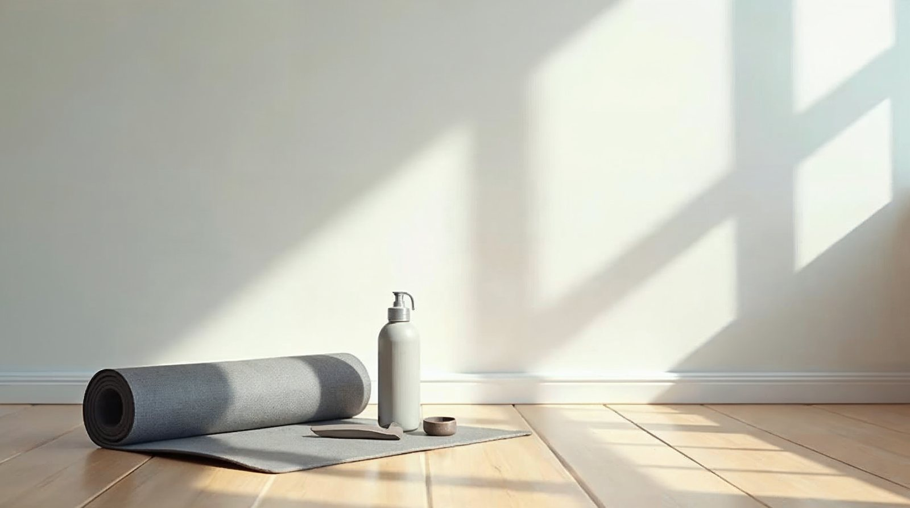
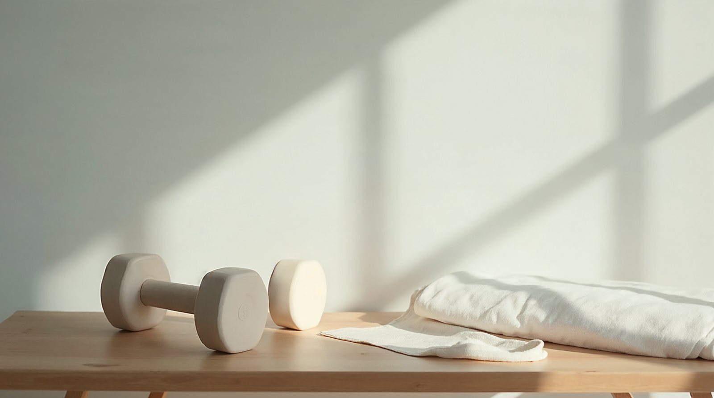
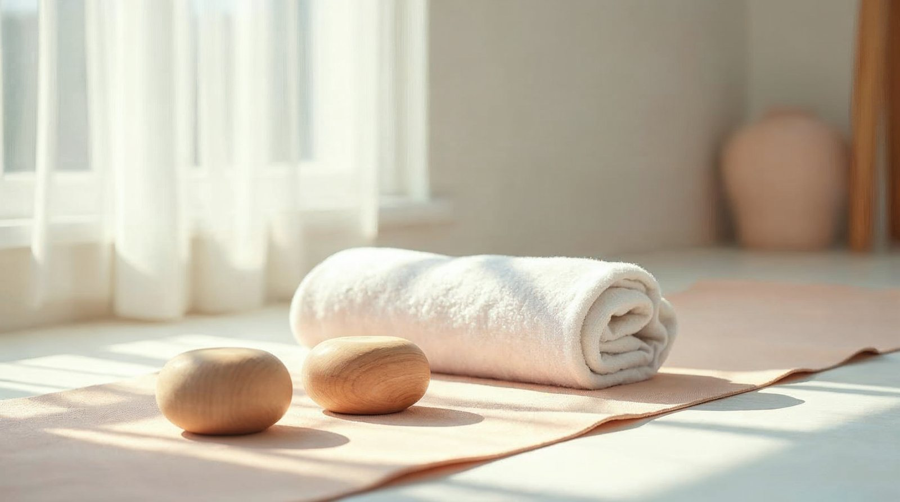

이종호 한의사 감수좋은꿈참사랑한의원 대표원장 (한의사 면허번호 19769)발행 2026-11-26 · 수정 2026-11-26
이 글의 차례
집에서 운동을 시작하면서 팔굽혀펴기를 매일 조금씩 늘려 왔습니다. 처음에는 가슴과 팔이 뻐근했는데, 어느 날부터 손바닥을 바닥에 대고 몸을 내리는 순간 손목 등쪽이 찌릿합니다. 요가 시간에 엎드려 버티는 자세를 할 때도, 아침에 침대를 짚고 일어날 때도 같은 자리가 시큰합니다.
손목 등쪽 통증은 손목을 뒤로 젖힌 채 체중을 싣는 동작이 많은 분들에게 흔합니다. 팔굽혀펴기, 플랭크, 요가와 필라테스, 물구나무, 체조, 그리고 아기를 돌보며 바닥을 자주 짚는 부모님에게서도 자주 듣는 이야기입니다.
진료실에서 저는 손목을 만지기 전에 하루 동안 손목을 어떻게 쓰는지부터 여쭙니다. 운동만이 아니라 키보드, 마우스, 휴대폰, 걸레질, 바닥에서 일어나는 습관까지요. 손목 등쪽은 이런 작은 동작이 하루 수백 번 쌓이며 지치는 경우가 많기 때문입니다.
손목은 엄지 쪽, 새끼손가락 쪽, 손바닥 쪽, 손등 쪽마다 아픈 이유가 조금씩 다릅니다. 그래서 '손목이 아프다'는 말보다 '어디가, 어떤 동작에서' 아픈지가 훨씬 많은 것을 알려 줍니다.
손목 등쪽에는 무엇이 있나요
손등 쪽 손목에는 손가락과 손목을 뒤로 젖히는 힘줄들이 여러 갈래로 지나갑니다. 이 힘줄들은 얇은 칸막이 같은 통로를 지나는데, 반복해서 손목을 젖히거나 젖힌 채 버티면 힘줄과 그 주변이 붓고 예민해질 수 있습니다. 이것을 흔히 손목 힘줄염이라고 부릅니다.
힘줄 아래에는 손목뼈들이 맞물려 있습니다. 손목을 끝까지 젖힌 채 체중을 실으면 손등 쪽 뼈 가장자리끼리 서로 눌리며 끼이는 느낌이 들기도 합니다. 체조 선수나 물구나무를 자주 하는 분에게 흔한 이런 통증을 손목 등쪽 충돌이라고 부르기도 합니다.
손목 등쪽에 말랑한 혹이 생겼다 작아졌다 하는 결절종도 같은 자리에 잘 생깁니다. 혹이 눈에 보이지 않을 만큼 작아도 젖힐 때 눌리며 아플 수 있어서, 필요하면 초음파로 함께 살펴봅니다.
왜 손목을 젖히고 짚을 때 아플까요
팔굽혀펴기 자세에서 손바닥을 바닥에 평평하게 대면 손목은 거의 90도 가까이 뒤로 젖혀집니다. 평소 손목을 그렇게까지 젖힐 일이 많지 않은데, 그 상태로 체중의 상당 부분을 버티니 손등 쪽 구조물에 부담이 몰립니다.
운동량을 갑자기 늘렸을 때 특히 잘 생깁니다. 하루 몇 번 하던 팔굽혀펴기를 몇 배로 늘리거나, 플랭크 시간을 급히 늘리거나, 새로 요가를 시작해 엎드린 자세가 많아지면 손목이 미처 적응하지 못합니다.
손목 자체의 유연성도 영향을 줍니다. 손목이 뒤로 충분히 젖혀지지 않는 분이 억지로 바닥에 손바닥을 붙이면 끝 범위에서 뼈와 힘줄이 눌립니다. 어깨와 날개뼈의 힘이 약해 체중이 손목 쪽으로 쏟아지는 자세도 손목 부담을 키웁니다.
운동 밖의 생활도 쌓입니다. 손목을 젖힌 채 키보드를 오래 치거나, 침대에서 휴대폰을 들고 손목을 꺾은 채 오래 보거나, 걸레질을 손바닥으로 세게 밀면 운동에서 지친 손목이 쉴 틈이 없습니다.
다른 손목 통증과는 어떻게 다른가요?
손목 통증은 자리에 따라 짐작하는 이유가 달라집니다. 아픈 자리를 손가락 하나로 짚어 보시면 구분하는 데 도움이 됩니다.
- 손등 가운데: 손목을 젖히고 짚을 때 아프면 힘줄염이나 등쪽 충돌, 결절종을 생각합니다.
- 엄지 쪽: 엄지를 쥐고 손목을 새끼 쪽으로 꺾을 때 아프면 드퀘르뱅 건초염을 살핍니다.
- 새끼손가락 쪽: 문고리를 돌리거나 짚을 때 딸깍거리면 손목 바깥 연골 쪽을 봅니다.
- 손바닥 쪽과 손가락 저림: 새벽에 손이 저려 깬다면 손목터널증후군을 생각합니다.
넘어지며 손을 짚은 뒤 엄지 뿌리 쪽 오목한 자리가 아프다면 손목뼈 골절을 확인해야 할 수 있습니다. 이런 경우는 정형외과 영상 검사를 먼저 받아 보시도록 안내합니다.

집에서 먼저 살펴볼 수 있는 것
탁자 앞에 서서 손바닥을 탁자에 대고 체중을 천천히 실어 보세요. 몇 도쯤 젖혔을 때, 체중을 얼마나 실었을 때 아픈지 기억해 두면 회복 흐름을 가늠하는 기준이 됩니다.
주먹을 쥔 채로 탁자를 짚었을 때는 아프지 않은지도 확인해 보세요. 손목을 곧게 편 채로 짚으면 편한데 젖히면 아프다면, 젖히는 각도가 부담이 되고 있다는 실마리가 됩니다.
손등을 거울에 비춰 양쪽을 비교해 보는 것도 좋습니다. 아픈 쪽 손등에 둥근 혹이 도드라지거나 붓기가 보이면 사진으로 남겨 진료 때 보여 주세요.
손목 통증을 두고 자주 헷갈리는 것
첫째, 손목 보호대를 차면 다 해결된다는 생각입니다. 보호대는 아픈 시기에 손목을 덜 젖히게 도와주지만, 하루 종일 차면 손목 주변 근육이 오히려 약해질 수 있습니다. 아픈 동작을 할 때 위주로 쓰시는 편이 좋습니다.
둘째, 아파도 참고 계속하면 적응된다는 생각입니다. 근육은 적응하지만, 힘줄은 회복하는 데 시간이 더 걸립니다. 같은 자리가 매번 찌릿하다면 양을 줄이고 자세를 바꾸는 것이 먼저입니다.
셋째, 손목만 쉬게 하면 된다는 생각입니다. 어깨와 날개뼈가 체중을 받쳐 주지 못하면 다시 운동할 때 같은 일이 반복됩니다. 손목이 쉬는 동안 어깨와 등의 힘을 함께 기르는 것이 좋습니다.

운동을 아예 쉬어야 하나요?
손목이 아프다고 운동 전체를 멈출 필요는 없는 경우가 많습니다. 손목을 젖히는 동작을 잠시 바꾸고, 다른 부위 운동은 이어 가면 됩니다.
팔굽혀펴기는 손바닥 대신 주먹을 쥐고 하거나, 손잡이가 있는 푸시업 바를 쓰면 손목을 곧게 유지할 수 있습니다. 벽에 손을 대고 하는 팔굽혀펴기나 무릎을 대고 하는 방법으로 체중을 줄여 시작해도 좋습니다.
플랭크는 손바닥 대신 팔꿈치를 대는 자세로 바꾸고, 요가의 엎드린 자세는 손바닥 아래 수건을 말아 받쳐 젖히는 각도를 줄여 볼 수 있습니다. 손가락을 넓게 벌리고 손가락 뿌리로 바닥을 누르면 체중이 손목 뒤쪽에 덜 몰립니다.
어떤 분에게 잘 생기나요
집에서 맨몸 운동을 새로 시작한 분, 요가나 필라테스 수업을 늘린 분, 체조나 브레이크 댄스처럼 손으로 체중을 받치는 운동을 하는 분에게 흔합니다. 헬스장에서 벤치 프레스나 어깨 위로 무게를 미는 운동을 할 때 손목이 뒤로 꺾이는 분도 같은 자리가 아플 수 있습니다.
운동을 하지 않아도 생깁니다. 아기를 돌보며 바닥에 손을 짚고 앉았다 일어나기를 하루에도 수십 번 하는 부모님, 바닥 청소를 손으로 하는 분, 손목을 젖힌 채 마우스를 오래 쓰는 분도 손목 등쪽이 지치기 쉽습니다.
회복은 어떤 순서로 가나요
첫 단계는 아픈 동작을 줄이고 손목을 젖히지 않는 방법으로 바꾸는 시기입니다. 두 번째 단계는 시큰함이 줄어든 뒤 손목을 아프지 않은 범위에서 부드럽게 움직이고 가벼운 힘을 다시 쓰는 시기입니다.
세 번째 단계는 탁자 짚기, 무릎 대고 팔굽혀펴기처럼 체중을 조금씩 다시 싣는 시기입니다. 이 단계에서 다음 날 시큰함이 늘지 않으면 원래 운동으로 천천히 돌아갑니다. 단계마다 걸리는 시간은 사람마다 달라서, 기록을 보며 함께 정합니다.
먼저 이렇게 여쭙니다
처음 오시면 대략 이런 순서로 여쭙니다. 미리 떠올려 오시면 진료가 훨씬 수월합니다.
- 언제부터, 어떤 운동이나 동작에서 손목 등쪽이 아프기 시작했나요?
- 최근 운동량이나 종류를 바꾸신 적이 있나요?
- 손등에 혹이나 붓기가 보이나요? 딸깍거리는 소리가 나나요?
- 넘어지며 손을 짚은 적이 있나요?
- 하시는 일에서 키보드, 마우스, 걸레질처럼 손목을 쓰는 시간은 얼마나 되나요?
- 아침에 손가락이 뻣뻣하거나 다른 관절도 붓는 일이 있나요?
여러 관절이 함께 붓고 아침마다 뻣뻣하다면 단순한 손목 과사용이 아니라 류마티스 같은 관절 질환을 확인해야 할 수 있습니다. 이럴 때는 류마티스내과 진료를 함께 권합니다.

일상에서 먼저 해 볼 수 있는 것
손목 등쪽 통증은 젖히는 각도와 체중을 줄이는 데서 시작합니다. 운동과 생활에서 함께 바꿔 보세요.
- 팔굽혀펴기는 주먹 쥐고 하거나 푸시업 바 쓰기
- 바닥에서 일어날 때 손바닥 대신 주먹이나 팔뚝으로 짚기
- 키보드 앞쪽에 손목 받침을 두어 손목 젖힘 줄이기
- 침대에서 휴대폰을 볼 때 베개로 팔꿈치 받치기
- 운동 전 손목을 앞뒤로 천천히 굽혔다 펴며 데우기
아픈 시기에는 운동 뒤 수건으로 감싼 찬 팩을 10분 정도 대는 것이 편할 수 있고, 뻣뻣함이 남는 시기에는 따뜻한 물에 손을 담그고 천천히 움직이는 쪽이 편할 수 있습니다. 어느 쪽이 내 손목에 더 편한지 며칠 기록해 보세요.
통증이 줄어들면 손목 주변 근육을 기릅니다. 가벼운 물병을 쥐고 손목을 천천히 들어 올렸다 내리기, 고무밴드로 손가락 벌리기처럼 작은 동작부터 시작합니다. 아프지 않은 범위에서 하루 한두 번, 몇 분이면 충분합니다.
어깨와 날개뼈의 힘도 함께 기르세요. 벽에 등을 대고 팔을 천천히 올렸다 내리기, 엎드려 날개뼈를 모으기처럼 등 쪽 근육을 쓰는 동작은 바닥을 짚을 때 손목에 몰리는 체중을 나눠 줍니다.
한의원에서 함께 살필 수 있는 경우
- 운동을 바꾼 뒤에도 손목 등쪽이 몇 주째 시큰한 경우
- 손목 보호대 없이는 바닥을 짚기가 불안한 경우
- 손목뿐 아니라 팔뚝과 팔꿈치까지 뻐근함이 번진 경우
- 결절종이나 힘줄 문제로 진단받은 뒤 생활 속 관리가 궁금한 경우
- 운동을 다시 늘리기 전 손목 상태를 점검하고 싶은 경우
좋은꿈참사랑한의원에서는 먼저 뼈나 관절 질환처럼 따로 확인이 필요한 경우가 아닌지부터 봅니다. 그다음 맥을 짚고, 손목과 팔뚝, 팔꿈치, 어깨, 목까지 눌러 보고 움직여 보며 불편한 자리를 확인합니다.
진찰한 내용을 바탕으로 침, 온열 관리, 운동 자세 안내 가운데 지금 상태에 맞는 것을 정합니다. 한약을 상의할 때는 드시는 약을 확인한 뒤 신중히 정하고, 임신 중이시면 먼저 알려 주시고 산부인과와 상의해 주세요.
정형외과에서 진단이나 치료를 받고 계신다면 그 방향을 따르면서 함께 갑니다. 처방받은 약은 상의 없이 멈추지 마세요. 한의원 진료는 그 곁에서 손목을 쓰는 습관과 회복 단계를 함께 살피는 쪽이라고 생각해 주시면 됩니다.
이렇게 기록해 오시면 상담이 쉬워집니다
손목 통증은 하루 동안 쓰는 양과 운동량에 따라 흐름이 달라집니다. 2주 정도 간단히 적어 보세요.
- 운동한 날, 종류, 팔굽혀펴기나 플랭크의 횟수와 시간
- 탁자를 짚고 체중을 실었을 때 아픈 정도(0~10점)
- 손목이 아팠던 생활 동작(키보드, 걸레질, 바닥 짚기 등)
- 아침에 손목이 뻣뻣했던 시간
- 손등에 혹이나 붓기가 보였던 날
기록을 나란히 놓고 보면 어느 동작이 손목을 가장 지치게 하는지 보이기 시작합니다. 그 동작 하나만 바꿔도 손목이 한결 편해지는 경우가 많습니다. 사진이나 짧은 영상으로 운동 자세를 남겨 오시면 손목 각도를 함께 보며 이야기할 수 있습니다.
손목과 오래 함께 운동하려면
손목은 작은 관절이지만 팔굽혀펴기와 플랭크, 요가처럼 몸무게를 받치는 운동에서는 큰 짐을 집니다. 그만큼 쉬는 시간과 바른 각도가 필요하고, 조금만 돌봐 주면 다시 운동을 함께 이어 갈 수 있는 경우가 많습니다. 손목이 보내는 시큰한 신호를 그냥 넘기기보다 자세와 양을 바꾸라는 안내로 받아들여 보세요.
이번 주에는 팔굽혀펴기를 주먹 쥐고 하기, 바닥에서 일어날 때 주먹으로 짚기, 이 두 가지만 바꿔 보시길 권합니다. 다음에 오시면 기록부터 함께 펼쳐 보고, 운동량을 다시 늘릴 시기를 같이 정해 보겠습니다.
이런 증상은 먼저 확인이 필요합니다
- 넘어지며 짚은 뒤 손목이 심하게 붓거나, 모양이 달라 보이거나, 움직이기 어려울 때
- 손목이 붉고 뜨겁게 붓거나 열이 날 때, 손가락 힘이 갑자기 빠질 때
이런 신호가 있으면 한의원보다 가까운 병원이나 응급실을 먼저 찾으세요.
함께 읽으면 좋은 글
- 넘어지며 손을 짚거나 손목을 접질린 뒤 시큰한 손목 염좌는 어떻게 살피나요?
- 손등이나 손목 안쪽에 말랑한 혹이 생겼다 작아졌다 하는 결절종은 어떻게 살피나요?
- 아기를 안거나 휴대폰을 쥘 때 엄지 쪽 손목이 찌릿한 드퀘르뱅 건초염은 어떻게 살피나요?
- 손목 새끼손가락 쪽이 시큰하고 돌릴 때 딸깍거리는 TFCC 통증은 어떻게 살피나요?
- 새벽에 손이 저려 깨는 손목터널증후군은 어떻게 살피나요?

여쭙는 것
- 언제부터, 어떤 운동이나 동작에서 손목 등쪽이 아프기 시작했나요?
- 최근 운동량이나 종류를 바꾸신 적이 있나요?
- 손등에 혹이나 붓기가 보이나요? 딸깍거리는 소리가 나나요?
생활에서 해 볼 것
- 팔굽혀펴기는 주먹 쥐고 하거나 푸시업 바 쓰기
- 바닥에서 일어날 때 손바닥 대신 주먹이나 팔뚝으로 짚기
- 키보드 앞쪽에 손목 받침을 두어 손목 젖힘 줄이기
한의원에서 함께 살필 것
- 운동을 바꾼 뒤에도 손목 등쪽이 몇 주째 시큰한 경우
- 손목 보호대 없이는 바닥을 짚기가 불안한 경우
- 손목뿐 아니라 팔뚝과 팔꿈치까지 뻐근함이 번진 경우
먼저 확인이 필요한 신호
- 넘어지며 짚은 뒤 손목이 심하게 붓거나, 모양이 달라 보이거나, 움직이기 어려울 때
- 손목이 붉고 뜨겁게 붓거나 열이 날 때, 손가락 힘이 갑자기 빠질 때
한눈에 보는 표
| 구분 | 핵심 |
|---|---|
| 여쭙는 것 | 언제부터, 어떤 운동이나 동작에서 손목 등쪽이 아프기 시작했나요? 최근 운동량이나 종류를 바꾸신 적이 있나요? |
| 생활에서 해 볼 것 | 팔굽혀펴기는 주먹 쥐고 하거나 푸시업 바 쓰기 바닥에서 일어날 때 손바닥 대신 주먹이나 팔뚝으로 짚기 |
| 한의원에서 함께 살필 것 | 운동을 바꾼 뒤에도 손목 등쪽이 몇 주째 시큰한 경우 손목 보호대 없이는 바닥을 짚기가 불안한 경우 |
| 먼저 확인이 필요한 신호 | 넘어지며 짚은 뒤 손목이 심하게 붓거나, 모양이 달라 보이거나, 움직이기 어려울 때 손목이 붉고 뜨겁게 붓거나 열이 날 때, 손가락 힘이 갑자기 빠질 때 |
자주 묻는 질문
손목이 아픈데 팔굽혀펴기를 계속해도 되나요?
손바닥을 평평하게 대는 대신 주먹을 쥐거나 푸시업 바를 써서 손목을 곧게 유지하는 방법으로 바꿔 보세요. 그래도 같은 자리가 찌릿하면 양을 줄이고 진찰로 원인을 함께 살펴보는 것이 좋습니다.
손목 보호대는 하루 종일 차야 하나요?
아픈 동작을 하는 동안 위주로 쓰시길 권합니다. 하루 종일 차고 있으면 손목 주변 근육이 약해질 수 있어서, 통증이 줄면 조금씩 벗는 시간을 늘려 갑니다.
손등에 작은 혹이 생겼는데 손목 통증과 관련이 있나요?
손목 등쪽에 잘 생기는 결절종일 수 있고, 젖힐 때 눌리며 아플 수 있습니다. 필요하다고 판단되면 초음파로 혹의 위치와 크기를 살펴보고, 필요하면 정형외과와 상의하시도록 안내합니다.
찜질은 차게 하나요, 따뜻하게 하나요?
운동 뒤 시큰하고 열감이 있을 때는 짧게 차게, 뻣뻣함이 남는 시기에는 따뜻하게 하며 천천히 움직이는 쪽이 편한 분이 많습니다. 어느 쪽이 편한지 기록해 진료 때 알려 주세요.
요가를 계속하고 싶은데 어떻게 하면 좋을까요?
엎드린 자세에서 손가락을 넓게 벌려 손가락 뿌리로 바닥을 누르고, 손바닥 아래에 수건을 말아 받쳐 젖히는 각도를 줄여 보세요. 아픈 동안에는 팔꿈치를 대는 자세로 바꾸는 것도 방법입니다.
좋은꿈참사랑한의원은 재진 때 지난번 이야기부터 이어서 여쭙니다. 진료시간과 예약은 오시는 길에서 확인하세요.
어디서 상담받을 수 있나요?
좋은꿈참사랑한의원은 서울 동작구 만양로2길 2 신성빌딩 3층·5층(서울 동작구 상도동, 7호선 상도역 3번 출구 근처)에 있습니다. 한의사 3명(이종호 대표원장, 조영기 수석진료원장, 정원영 진료원장)이 진료합니다. 진료시간은 평일 09:30~20:00(점심 13:00~14:00), 토·일·공휴일 09:30~15:00이며, 방문 전 전화로 확인을 권합니다. 예약은 네이버 예약, 카카오톡 상담, 전화 02-815-7510로 받습니다.
이 글은 일반적인 건강 정보이며 개인의 진단이나 치료를 대신하지 않습니다. 증상이 있거나 복용 중인 약이 있다면 진료를 통해 확인하세요. 치료 효과는 개인마다 다를 수 있습니다.
작성 기준: 일반적으로 알려져 있는 건강 정보를 참고해 정리했습니다(대표원장 감수). 증상 기록은 1~2주 동안 하루 1회, 비슷한 시간에 적어 오시면 지난 상태와 비교하기 쉽습니다.